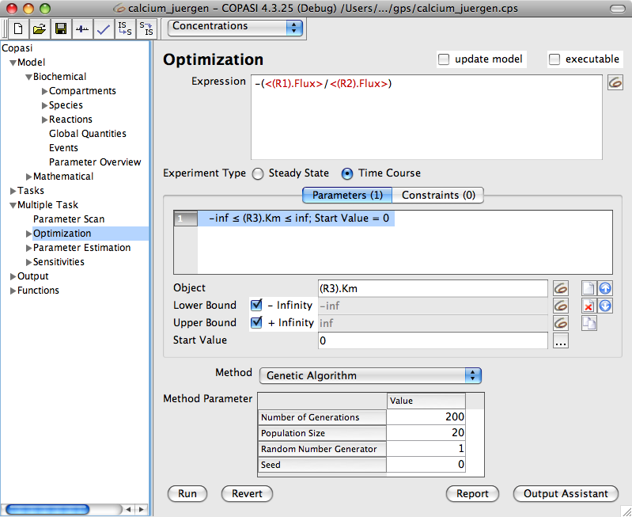
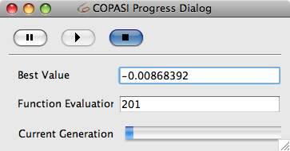

The optimization task lets you minimize a given objective function by scanning one or more parameters over a given range. This probably sounds rather cryptic, therefore, lets try to illustrate this with a simple example.
We assume you have a model that consists of several reactions and two of those reactions fluxes (R1, R2) depend on a certain parameter k (either directly or indirectly). Now you are interested in finding the optimal value of k so that the ratio of R1/R2 will be maximal. So lets see how you would do this in COPASI.
|  |
| Optimization~h~Task Dialog |
If you go to the optimization dialog which you can find in the tree under Multiple Task->Optimization, you will get a screen similar to the one above. At the top of the dialog, you can find an edit line called Expression where you have to input your objective function, that is the expression that COPASI will try to minimize during the optimization. In our case, we want to find the value of k where the ratio of R1 and R2 is maximal. At the beginning of this section, I stated that COPASI will minimize a given objective function, but we would like to maximize the objective function R1/R2. So how do we generate a function to be minimized out of the function R1/R2? This can be achieved in two ways, either we inverse the ratio in order to minimize R2/R1, or we add a "-" sign to our ratio R1/R2. (For the sake of simplicity, I will assume here that the fluxes R1 and R2 will always be positive.) For this example I will use the second possibility and therefore the objective function for COPASI to minimize will be -(R1/R2). Now you can't just enter this expression into the line edit field since COPASI does not associate the names R1 and R2 with the fluxes through your reactions. In order to build this expression, you have to start typing "-(" into the line edit field. Now, you have to press the button to the right of the line edit field which opens the object browser. In this object browser, you select the flux (particle or concentration) which belongs to R1 and press the OK button. Now you will get a string that corresponds to this flux object right after the part of the expression you already typed. You can now go on by typing "/" followed by the selection of the flux for R2. You end the expression by typing ")". Please be aware that you are allowed to edit the expression, but only those parts of the expression that do not belong to object representation strings. That means everything that has been inserted via selection from the object browser may not be modified. You may however delete complete identifier expressions.
You can run an optimization task with several different methods which can be selected via the drop down list below the input field for the objective function. Each of those methods has a number of parameters which are documented in the methods chapter.
The optimization task can also be run on either the "Time Course" or the "Steady-state" subtask. Which one is used for the optimization run can be selected via the correspondingly named check boxes. So for our example we would choose the "Time Course" subtask.
The only thing we have not done yet is to tell COPASI which parameter(s) it should scan in order to minimize the objective function. In the middle of the widget, there is another line edit field right after Object where you can specify which parameter is to be scanned. The selection is again done via clicking on the button to the right of the edit field and selecting the correct parameter from the object browser. Please note that is possible to create multiple parameters at once. Below the Object you can specify the upper and lower bounds for the parameter during the optimization. Those bounds can also be expressions depending on other parameters. Per default, the check boxes for -Infinity and +Infinity are selected as the boundaries. Since a computer can't handle infinitely small or large numbers, the search will effectively proceed from the lowest possible to the largest possible double precision number. If you want to specify your own range, you first have to deselect the +Inf or -Inf check box and then you can set your own bounds. As a matter of convenience you may enter -X% or +X% as the lower and upper limits. This instructs COPASI to calculate the limits based on the start value. The start value is the initial parameter value used by COPASI in any fitting attempt. Per default COPASI selects the current model value of the parameter to be estimated as the starting value. You may manually override this default or use the ... button to reset it to model values, randomize it, or set it to the last estimated values. Please note, if the start value of a parameter is outside the boundaries specified, COPASI will force it to the nearest boundary during the optimization. If you want to delete a parameter from the scan list, you just select it and click on the delete button which you find at the right side. If you want to scan more than one parameter, you just add more by clicking on the new button and add as many parameters as you need. Please note, you may select multiple parameters and edit them simultaneously. You can also change the order in which the parameters are scanned by moving them up or down in the list with the corresponding buttons at the right side of the widget. This has only an effect if the parameter boundaries of one parameter depend on another parameter. COPASI does not currently determine such a dependency and it is left to the user to order the parameters appropriately.
In addition to parameters COPASI knows also about constraints. Constraints are applied to the solution. i.e., they are evaluated after the simulation which can currently be either a time course or a Steady-State calculation. A possible constraint could be that the Steady-State concentration of a species has to be within a certain range that can be specified by the user. The widget for specifying these constraints can be found under the tab called Constraints and the constraints are specified in the same way as the parameters to be scanned. Each constrained consists of an object that is to be constrained and an upper and lower bound that define the constraint for the object. Just like for the parameters, several constraints can be specified.
|  |
| Optimization Progress Dialog |
Once you have set up all the parameters, you are ready to run the optimization task by clicking on Run. COPASI will now display a progress dialog which informs you about the progress of the calculation and about the best (smallest) value found for the objective function up to this step. Since this progress dialog will close once the optimization task has run, you probably also want to define a report to be written during the calculation. In many cases using the default report name "Optimization" is sufficient. The default report outputs a description of all the settings you provided for the optimization run. It prints intermediate results during the calculation every time the target value has improved. In the end it prints a summary of the result. The easiest way to define a customized report is to use the
output assistant. Alternatively, you can create a report manually as described in the
output section. Once you have created a report definition for the optimization task, you click on the report button at the bottom of the dialog. In the dialog that opens, you select the report you just created from the drop down list labeled Report Definitions and then you select a filename where the report is to be stored in the field labeled Target. You can either type a filename manually, or you can select one by clicking on the browse button. When you are finished, you click the Confirm button. Now the next time you run the optimization, a report will be stored in the location you specified.